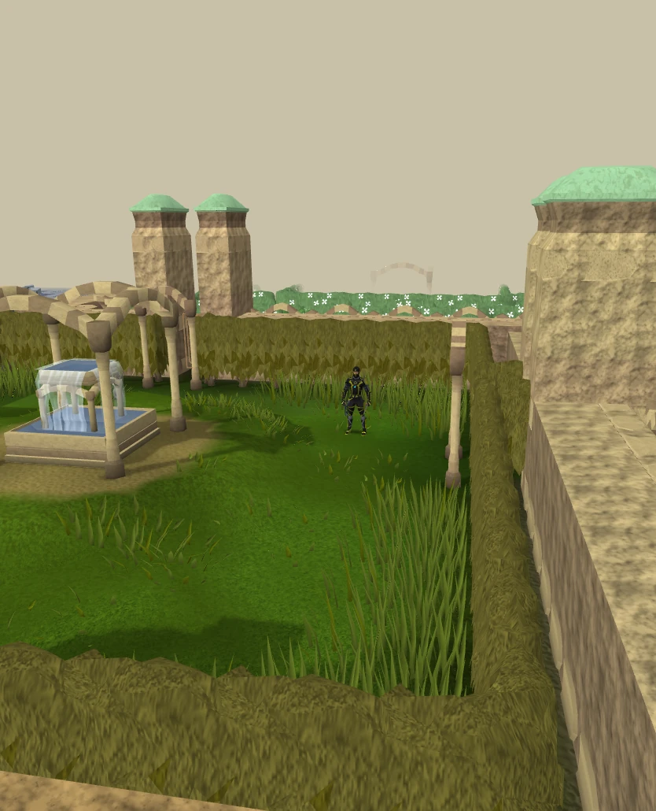

;;home
Return to Harmony Home when the current area and activity allow travel.

Player help
Find a shortcut, copy a command, or get the details you need to report a problem.
Type these in game chat. Your account and current activity can affect which commands are available.
26 commands
;;homeReturn to Harmony Home when the current area and activity allow travel.
;;atlasOpen Atlas to search destinations and review their requirements. Close other panels before opening it.
;;shopsTravel to the Ashdale market when travel is allowed.
;;returnOpen the return route for your previous supported destination. Normal travel checks still apply.
;;dzTravel to the donor zone if your account has access. Use it outside combat and restricted activities.
;;commandsBrowse the in-game player command book.
;;modeShow your current skilling and combat XP rates.
;;petsOpen the skill tree for your owned companions.
;;journalOpen the Adventure Journal for goals, collections and settings.
;;eventsCheck the active hourly event, next draw and player XP multiplier on your world.
;;bonusxpList your stored bonus XP by skill.
;;loyaltyOpen Loyalty to see points, streaks and aura options.
;;outfitsCollect pending skilling outfit pieces.
;;ironkitClaim or replace missing Ironman starter gear on an eligible Ironman or Hardcore Ironman account.
;;ref NSGClaim the one-time referral reward after character setup. Leave room for the full bundle.
;;voteOpen the vote link associated with your account.
;;claimvoteClaim confirmed votes when in an eligible state with two free backpack slots.
;;lootOpen or close Area Loot. Use ;;loot on or ;;loot off to change whether taking a ground item opens it.
;;slayertask onShow the Slayer task tracker. Use ;;slayertask off to hide it.
;;timersSee your active potion timers.
;;aggression offEnd your active aggression potion effect.
;;prepareRestore life points, Prayer and run energy while banking. Add a number from 1 to 10 to load an owned preset as part of preparation.
;;presetsManage your inventory and equipment presets while your bank is open outside restricted activities.
;;quantity allSet the current production menu to make all available products. Use a number from 1 to 10,000 to save a fixed quantity for that menu.
;;reportbugShow where to report an issue, including steps and screenshots.
;;reportplayerShow how to contact a moderator privately about a player.
Use the download section for the AetherRS3 launcher and Java link. Let the launcher finish updating and the game finish loading its cache before testing responsiveness.
Open the game from the AetherRS3 launcher and let it finish updating. If the message still appears, record when it occurs and the exact wording. Note whether it began after a death or reconnect.
Close any large panels and leave the chat entry idle for T or Space. Space uses Loot All only while Area Loot is open. Use the typed command for Atlas, Home, Companions or Area Loot when applicable.
Record whether it happens before the lobby, after Play Now or inside the world. Include the displayed message and whether the launcher had just updated. Mention whether it repeats on another normal login.
Read the phase or path in the matching guide. When reporting an issue, include your combat style, the exact action you clicked and the last encounter message.
Copy the template and add your details. For boss reports, include the phase and path. For interface reports, include the tab and last control you used.